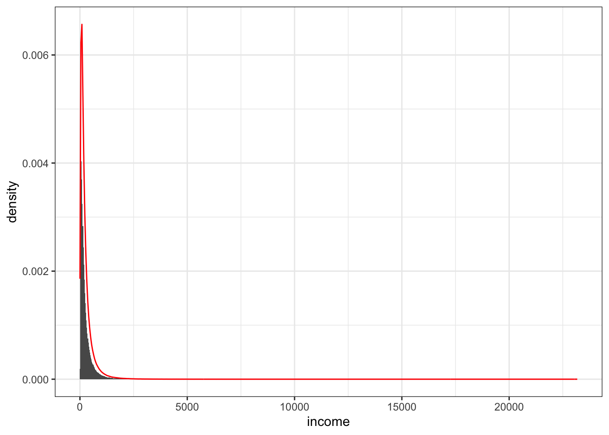

# definindo o tamanho da população
pop_size <- 1000000
set.seed(123)
population <- tibble(
# id do indivíduo
id = 1:pop_size,
# gerando uma distribuição binomial, com 30% de probabilidade do usuário em ter um diploma
college_degree = rbinom(pop_size, size = 1, prob = 0.3),
# gerando uma distribuição binomial, com 20% de probabilidade do usuário em ter um cabelo castanho
brown_hair = rbinom(pop_size, size = 1, prob = 0.2)
)Motivação
[você pode pular essa seção se não quiser ler uma historinha antes do mão na massa]
O livro The Effect: An Introduction to Research Design and Causality, do professor Nick Huntington-Klein, tem sido meu maior companheiro atualmente. Dentre todos os tópicos que pude estudar desde que comecei a me aventurar pelo caminho das ciências de dados, com certeza o tema “causalidade” tem me feito refletir por horas.
Nick tem as qualidades que mais admiro em um professor: com uma linguagem dinâmica e divertida, ele traduz temas profundos de forma simples. Com o uso de exemplos palpáveis, ele nos auxilia a enxergar o conteúdo teórico sendo aplicado na realidade, sem perder o rigor necessário. Essa habilidade tem um lugar especial no meu coração: como a minha formação acadêmica não foi em exatas, temas que são explicados dessa maneira me possibilitam estudar áreas que, anos atrás, julgava impossível.
Quando comecei a trabalhar com ciência de dados, achava [d.i.a.r.i.a.m.e.n.t.e] que ter uma graduação em farmácia (e não em alguma área de exatas) era meu ponto mais fraco. Bom, não posso dizer que a terapia está totalmente em dia e que esse sentimento já foi superado [ele com certeza é um amigo presente], mas, nos últimos tempos, tenho notado que o fato de ter uma formação em algo totalmente diferente acabou me colocando em uma posição de querer repassar tudo que venho estudando de um jeito que outras pessoas (que também não tem a formação na área de dados) consigam entender. O exercício sempre é: como a Isabella farmacêutica gostaria que esse tema fosse apresentado? De alguma maneira, minha maior fraqueza se tornou uma aliada porque, depois de passar por alguns projetos na área de ciência de dados, pude sentir na pele que uma parte muito importante do nosso trabalho consiste em apresentar os resultados que chegamos para áreas não-técnicas: em geral, as pessoas que realmente vão usar aquilo que desenvolvemos!
Depois desse preâmbulo todo, deixa eu chegar no propósito desse artigo: esse ano estava trabalhando em um projeto que tinha como objetivo entender quais fatores foram importantes para um usuário (da plataforma em que trabalho) assinar um determinado produto que oferecemos. Pra responder essa pergunta, usei um modelo de regressão que tinha algumas variáveis que o time de negócio envolvido no projeto julgava importantes pra explicar a conversão de um usuário de “não pagante” para “pagante”. Enquanto apresentava os resultados do modelo, um colega (que trabalha nesse time para o qual estávamos entregando o projeto) me questionou o porquê de uma variável X do modelo apresentar um efeito muito menor na conversão do que eles estavam esperando. Esse time em específico tinha conduzido um estudo anterior ao meu projeto, e, em alguma análise descritiva desse estudo, tinham notado que a variável X em questão tinha um impacto muito diferente na conversão do que o impacto que estávamos vendo na minha modelagem.
Quando eles me contaram como tinham feito a análise nesse primeiro estudo, expliquei que o modelo de regressão que estávamos usando agora avaliava o efeito da variável X independentemente do efeito de outras variáveis (o que não acontecia na análise descritiva de médias do estudo anterior). A discussão sobre a diferença entre uma regressão e uma análise descritiva acabou não se aprofundando na reunião e eu segui o resto da apresentação com aquela vozinha dentro de mim dizendo: não é essa explicação que a Isabella farmacêutica gostaria de ter ouvido. Como se essa vozinha já não fosse chata por si só, tinha uma outra dizendo: será que você entende de verdade como uma análise descritiva pode levar a conclusões equivocadas?
[síndrome do impostor, seja bem-vinda]
Na mesma semana em que essa reunião aconteceu, enquanto lia o capítulo 5 do livro The Effect, me deparei com um exemplo que trazia, de forma resumida, um jeito de enxergar como podemos nos equivocar nas conclusões que tiramos quando avaliamos dados observacionais sem levar em consideração como as variáveis independentes de um modelo se influenciam. E é esse o objetivo desse artigo: trazer o exemplo que o querido professor Nick colocou no livro (e alguns outros insights que tive enquanto estudava esse capítulo) para tentar explicar de forma simples como confundidores de um modelo podem causar uma baita confusão.
[achei o universo muito simpático por fazer tudo se conectar em menos de 7 dias] ü•πüôè
Ponto de partida
Criando o nosso universo
Vamos começar simulando uma população. Dado que estamos criando todas as regras de como nosso universo funciona, sabemos exatamente o processo gerador dos dados (DGP) e podemos concluir como as coisas acontecem…
No nosso mudinho, temos as seguinte regras:
- 30% dos indivíduos possuem diploma
- 20% dos indivíduos possuem cabelo castanho
- O salário dos indivíduos segue uma distrbuição log-normal
- Se um indivíduo tem diploma, seu salário aumenta em 20%
- Se um indivíduo tem cabelo castanho, seu salário aumenta em 10%
| college_degree% | brown_hair% |
|---|---|
| 29.964 | 20.005 |
Para cada indivíduo gerado na nossa população, vamos calcular o salário conforme as regras estabelecidas acima.
Um pequeno parênteses sobre o cálculo do salário
Conforme dito, o salário é log-normal. A primeira vez que pensei em como simular, foi … Contudo, olhando no livro, o autor indicava calulcar o salário da seguinte maneira… Só queria mostrar aqui que ambos os jeitos equivalem a mesma coisa…
Vamos seguir no cógido calculando o salário conforme o Nick indicou…
Code
set.seed(123)
population <- population |>
mutate(
error_term = rnorm(n = pop_size, mean = 5, sd = 1),
log_income = brown_hair * 0.1 + college_degree * 0.2 + error_term,
income = exp(log_income)
)Imagine um pesquisador que não tenha conhecimento algum sobre o processo gerador de dados dessa população, mas que esteja interessado em responder a seguinte pergunta: “Pessoas com cabelo castanho possuem um salário maior do que pessoas que não possuem cabelo castanho?”.
Plot do salário

Plot do log do salário

Como sabemos que indivíduos de cabelo castanho tem um salário 10% maior, esperamos ver isso nos dados…
| brown_hair | mean_log_income |
|---|---|
| 0 | 5.059706 |
| 1 | 5.158213 |
Se segmentamos essa análise somente para indivíduos que não possuem diploma, chegamos na mesma conclusão.
| brown_hair | mean_log_income |
|---|---|
| 0 | 4.998622 |
| 1 | 5.100115 |
| brown_hair | mean_log_income |
|---|---|
| 0 | 5.202539 |
| 1 | 5.293773 |
So far so good… Dentro dos segmentos, conseguimos notar que o salário tem a diferença esperada. Um outro jeito que podemos ver isso é olhando para a porcentagem de indivíduos de cabelo castanho na população e nas segmentação college == 0 e college == 1. Em todos esses grupos, a quantidade de usuário se mantém igual ao DPG (de ~20%).
Uma outra conclusão que podemo tirar é que as variáveis college_degree e bronw_hair são independentes, porque uma variáve não afeta a distribuição da outra variável na população.
Criando um outro universo…
# A tibble: 1 × 1
`sum(hair)/n()`
<dbl>
1 0.427# A tibble: 1 × 1
`sum(hair)/n()`
<dbl>
1 0.517# A tibble: 1 × 1
`sum(hair)/n()`
<dbl>
1 0.219
[1] 302[1] 203# A tibble: 1 × 3
n s perc
<int> <dbl> <dbl>
1 561 224 39.9[1] 427